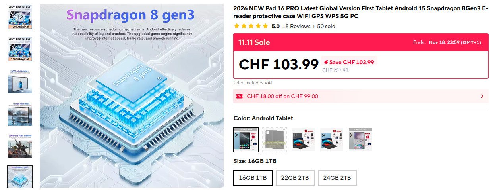
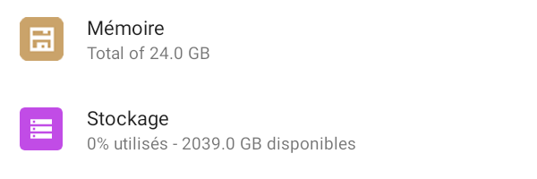
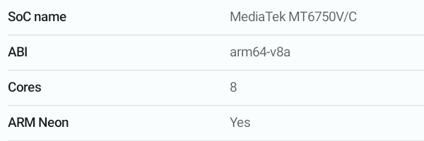

The story
Relatives of mine ordered a tablet on AliExpress a few weeks ago: a "2026 Pad 16 PRO" with a Snapdragon 8 Gen 3, 16 GB of RAM, 1 TB of storage and Android 15, for CHF 103.99. Once it arrived they had second thoughts and gave it to me before putting it on their Wi-Fi.
I expected fake specs, and I got them. What I did not expect was to spend the rest of the day in Ghidra. The firmware lies about the hardware, rewrites what benchmark apps show on screen, and has a bot from the Vo1d family linked into one of Android's core libraries.
Here are the main findings.
What I found
1. The hardware is not what was sold
The funny part first: the order was for the 16 GB + 1 TB variant, and the tablet's own Settings screen claims 24 GB of RAM, 2039 GB of storage and "Android 16". A free upgrade to the top model, apparently. Faking the bigger number costs the same as faking the smaller one. A small open-source hardware-info app from F-Droid, which the firmware does not know about, tells a different story. More on why that matters in the next section.
What was sold

What Settings claims

What is really inside

| Sold as | Actually |
|---|---|
| Snapdragon 8 Gen 3 | MediaTek MT6750, a budget chip from 2016 |
| 16 GB RAM | 4 GB at most (the chip's limit). The kernel is patched to report exactly 24 GB |
| 1 TB storage | 23 GB usable |
| Android 15 | Android 10, March 2021 security patch, 2016 kernel |
| 2560 × 1600 display | 800 × 1280 |
| 20000 mAh battery | 4350 mAh |
| 5G | a 2016 4G modem |
The build fingerprint is copied from a Gionee P61, a phone that sits on Google's certified-device list, so the tablet also introduces itself to Google Play as somebody else. The IMEI and MAC address are probably self-assigned too, rather than properly allocated: the MAC prefix is not registered to any manufacturer, and a factory tool left on the tablet exists to write both.
2. The firmware defends the lie
Faking the numbers in Settings is the "easy" part. Someone also went to real effort to stop buyers from checking with the usual tools.
To get a second opinion on what Settings was telling me, I reached for CPU-Z, the app most people use to see which chip is really inside a device. It would not install. Every version I tried, and CPU-Z Advance too, failed with INSTALL_FAILED_INVALID_APK, and re-signing it with my own key changed nothing. So I looked for something less famous and found CPU Info on F-Droid, a small open-source app that installed on the first try and showed the MediaTek chip from the screenshot above.
Decompiling framework.jar explained why. Android's TextView, the class every app uses to draw text, has been patched with a list of 17 benchmark and device-info apps: AnTuTu, AIDA64, DevCheck, CPU-Z, CPU-X and a dozen more. When one of them is on screen, the patched code watches the labels the app draws, such as "CPU model" or "Frequency", and swaps the value next to them for one stored in persist.sys.lz.* system properties. On this tablet those properties read Snapdragon 8 Gen3, 24 GB of RAM, 2048 GB of storage, Android 16 and a 25000 mAh battery. The app measures the real hardware correctly, and the lie is painted over the result as it is drawn. The same code can rewrite AnTuTu's benchmark score and its "genuine device" verdict.
CPU-Z, being one of the best-known tools, is simply refused at install. CPU Info is not on the list, which is why it tells the truth. An interesting piece of work, honestly. But stay with me, because the fake specs turned out to be the least of it.
3. There is a bot in the firmware
This is the part that matters. libandroid_runtime.so is a core Android library that gets loaded into every app. On this tablet it has about sixty extra functions linked into it, and the Zygote routine that sets up each new app process (SpecializeCommon) has been modified to call them. In practice, every app you open starts with the bot already inside it.
From the decompiled code, the bot:
- calls a hardcoded server,
3.132.75.97on TCP 55530, and expects an RSA-2048 encrypted list of command servers back; - falls back to 480 generated
.comdomains if that server is gone; - reports which app it is running in and waits for tasks;
- downloads plugins and loads them straight into the host app, as DEX code in memory or as native libraries, and can run shell commands.
That IP address is already listed on ThreatFox as a Vo1d command server, and the protocol, port range, encryption and domain generator all match the published research on Vo1d (XLab's Long Live The Vo1d Botnet is the reference write-up), a botnet that rents out infected devices as residential proxies and runs ad fraud. Public reports describe Vo1d on Android TV boxes. Here it is linked into the runtime of a tablet sold as new, in a firmware build dated 29 October 2026.
The code lives on the signed system partition, so a factory reset does not remove it, and there is no clean firmware to flash on a no-name clone.
4. A quick tour of the preinstalled apps
After all that, a small tour of the preinstalled apps felt worth the time. I pulled the dozen or so that are not stock Android, Google or MediaTek, and opened them in jadx.
- The "system updater" sends the IMEI, MAC address, model and brand to
fota.atsota.com, and silently installs whatever APK the server hands back. - A hidden installer adds Facebook, TikTok and YouTube on first boot. Those are the official apps, with genuine Meta, TikTok and Google signatures. They still run with the bot inside them, like every other app on the tablet.
- A Baidu location library (
com.baidu.map.location) sits in the privileged system apps and fails signature verification: its v2 signature was stripped, which usually means the APK was modified after signing. - A search widget (
com.nyn.search) is signed with a blank certificate, every field set to0, and holds permissions to change secure system settings and act across user profiles. - An app called
com.example.noapp, the placeholder name from Android Studio's project template, runs with full system privileges. I found no meaningful code in it. - Factory tools left in the retail build write the IMEI and MAC address and set the fake spec values. A Verizon SIM-lock service is there too, for no obvious reason.
What I did about it
- Wrote to the seller. The store is a trading company registered about four months before the sale, so I have my doubts about how surprised they will be. It is still where a refund starts, and it puts the findings on record.
- Reported it to AliExpress. A dispute for the order, and a report on the listing itself with the evidence: the spec comparison, the hashes and the ThreatFox entry.
- Sent the samples to MalwareBazaar. Both infected libraries are there, so antivirus vendors and other researchers can pick this build up.
Indicators
| SHA-256, arm64 | 04e6f503542e4bcf0e8dc51bc97c9698f2c212c664549ebed225ca92e497dc1a |
| SHA-256, arm32 | 5bc0839e87e68f192f90c6f2923bea7f739690a412b4b054118107c331119581 |
| Path | /system/lib64/libandroid_runtime.so, /system/lib/libandroid_runtime.so |
| Bootstrap server | 3.132.75.97, TCP 55530 (ThreatFox: 55530, 55520) |
| Domain generator | 4 seeds, 120 .com domains each, first five characters mutated |
| Payload entry class | com.plg.init.Zygote |
| Dropped files | <app data>/.z.dex, /data/system/packages-vendor.list |
| Spec spoofing | framework.jar (patched android.widget.TextView), persist.sys.lz.* |
| Updater | com.otauc.aiot.tbx.fota, fota.atsota.com |
| Firmware build | P510S_V6.0_CE_XHUI_P10_PTH_Z50_OVERSEA_ZZNY30105125_Z332_20261029 |
How I looked
ADB over USB as the normal shell user, with no root and no flashing. The tablet never joined a network, and the only thing I installed on it was the hardware-info app. The rest is static analysis: Ghidra and radare2 for the native library, jadx for the framework and the apps, apksigner for signatures. Nothing from the tablet was ever run on my machine.
The price of keeping it offline is that I never saw the bot talk to its server or fetch a second stage. That would be a second step, if time permits.